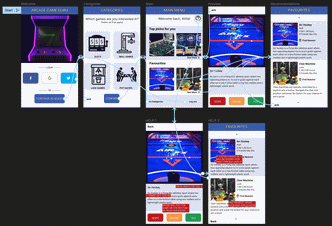

portfolio
-

Danger Zones
A web / mobile app that is able to show nearby threats, such as animals (wolfes, bears, snakes), earthquakes, etc. There was some UX research done while designing the app, more will be done in the future.
-

Music Exchange
A website that let's user upload a short demo of their music. This is my first design in Adobe XD (I used Figma for the other projects). . I came up with the idea of the "Double Like" button and three-way buttons (bad, neutral, good). More improvements will be done in the future.
-

Arcade Game Guru
My first UX project in the Google UX course. This is a hypothetical app, that let's people like/dislike arcade machines and then browse machines matched also by his peers. I came up with the idea of the "Maybe " button, which is as far as I know is unusual for swiping card apps.